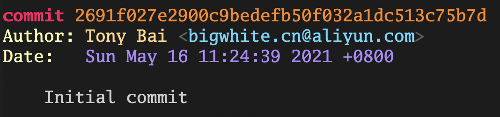
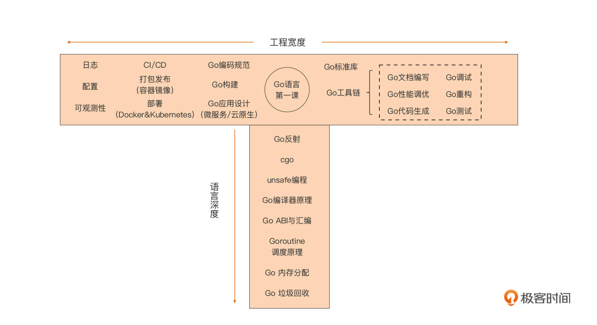
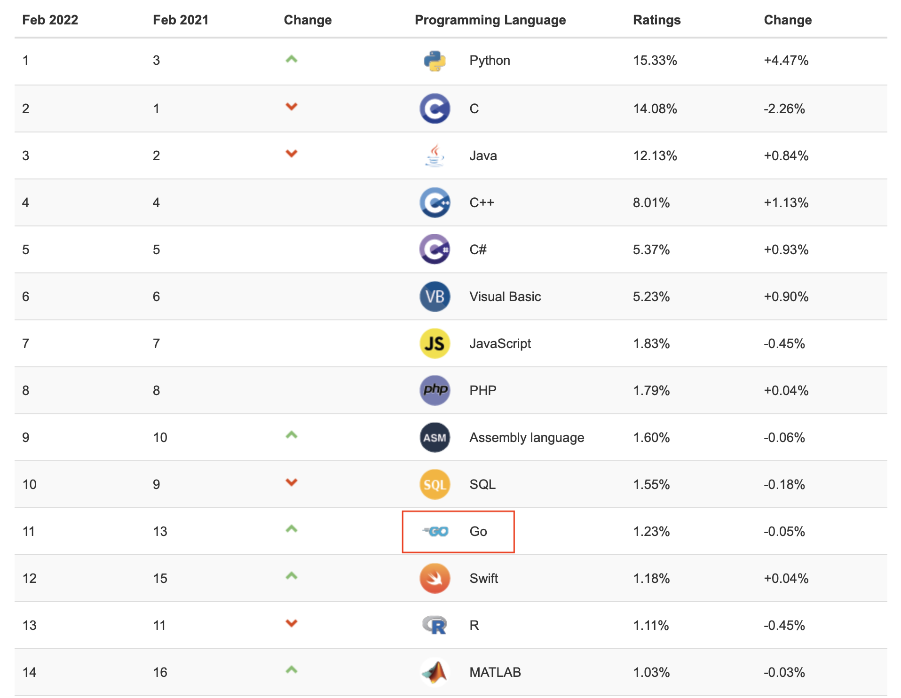
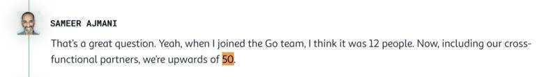

- 00 开篇词 这样入门Go，才能少走弯路.md.html
- 01 前世今生：你不得不了解的Go的历史和现状.md.html
- 02 拒绝“Hello and Bye”：Go语言的设计哲学是怎么一回事？.md.html
- 03 配好环境：选择一种最适合你的Go安装方法.md.html
- 04 初窥门径：一个Go程序的结构是怎样的？.md.html
- 05 标准先行：Go项目的布局标准是什么？.md.html
- 06 构建模式：Go是怎么解决包依赖管理问题的？.md.html
- 07 构建模式：Go Module的6类常规操作.md.html
- 08 入口函数与包初始化：搞清Go程序的执行次序.md.html
- 09 即学即练：构建一个Web服务就是这么简单.md.html
- 10 变量声明：静态语言有别于动态语言的重要特征.md.html
- 11 代码块与作用域：如何保证变量不会被遮蔽？.md.html
- 12 基本数据类型：Go原生支持的数值类型有哪些？.md.html
- 13 基本数据类型：为什么Go要原生支持字符串类型？.md.html
- 14 常量：Go在“常量”设计上的创新有哪些？.md.html
- 15 同构复合类型：从定长数组到变长切片.md.html
- 16 复合数据类型：原生map类型的实现机制是怎样的？.md.html
- 17 复合数据类型：用结构体建立对真实世界的抽象.md.html
- 18 控制结构：if的“快乐路径”原则.md.html
- 19 控制结构：Go的for循环，仅此一种.md.html
- 20 控制结构：Go中的switch语句有哪些变化？.md.html
- 21 函数：请叫我“一等公民”.md.html
- 22 函数：怎么结合多返回值进行错误处理？.md.html
- 23 函数：怎么让函数更简洁健壮？.md.html
- 24 方法：理解“方法”的本质.md.html
- 25 方法：方法集合与如何选择receiver类型？.md.html
- 26 方法：如何用类型嵌入模拟实现“继承”？.md.html
- 27 即学即练：跟踪函数调用链，理解代码更直观.md.html
- 28 接口：接口即契约.md.html
- 29 接口：为什么nil接口不等于nil？.md.html
- 30 接口：Go中最强大的魔法.md.html
- 31 并发：Go的并发方案实现方案是怎样的？.md.html
- 32 并发：聊聊Goroutine调度器的原理.md.html
- 33 并发：小channel中蕴含大智慧.md.html
- 34 并发：如何使用共享变量？.md.html
- 35 即学即练：如何实现一个轻量级线程池？.md.html
- 36 打稳根基：怎么实现一个TCP服务器？（上）.md.html
- 37 代码操练：怎么实现一个TCP服务器？（中）.md.html
- 38 成果优化：怎么实现一个TCP服务器？（下）.md.html
- 39 驯服泛型：了解类型参数.md.html
- 40 驯服泛型：定义泛型约束.md.html
- 41 驯服泛型：明确使用时机.md.html
- 元旦快乐 这是一份暂时停更的声明.md.html
- 加餐 作为Go Module的作者，你应该知道的几件事.md.html
- 加餐 如何拉取私有的Go Module？.md.html
- 加餐 我“私藏”的那些优质且权威的Go语言学习资料.md.html
- 加餐 聊聊Go 1.17版本的那些新特性.md.html
- 加餐 聊聊Go语言的指针.md.html
- 加餐 聊聊最近大热的Go泛型.md.html
- 大咖助阵 叶剑峰：Go语言中常用的那些代码优化点.md.html
- 大咖助阵 大明：Go泛型，泛了，但没有完全泛.md.html
- 大咖助阵 孔令飞：从小白到“老鸟”，我的Go语言进阶之路.md.html
- 大咖助阵 徐祥曦：从销售到分布式存储工程师，我与 Go 的故事.md.html
- 大咖助阵 曹春晖：聊聊 Go 语言的 GC 实现.md.html
- 大咖助阵 海纳：聊聊语言中的类型系统与泛型.md.html
- 期中测试 一起检验下你的学习成果吧.md.html
- 用户故事 罗杰：我的Go语言学习之路.md.html
- 结束语 和你一起迎接Go的黄金十年.md.html
- 结课测试 快来检验下你的学习成果吧！.md.html
- 捐赠
结束语 和你一起迎接Go的黄金十年
你好，我是Tony Bai。
在虎年春节营造的欢乐祥和的气氛中，我们迎来了这个专栏的最后一节课。
这个专栏的撰写开始于2021年5月中旬，我使用GitHub仓库管理专栏文稿，这是我的第一次提交：

从那时开始，我便进入了专栏写作的节奏。从2021年5月到2022年2月，9个月的时间，我洋洋洒洒地写下了20多万字（估计值），写作过程的艰辛依然历历在目。
你见过凌晨4点你所居住的城市吗？我每周至少要见三次。你每天能睡多长时间呢？4～5个小时是我的常态。在日常工作繁忙，家里带俩娃的背景下，这算是挑战我自己的极限了！但当我看到有那么多订阅学习专栏、认真完成课后思考题以及在留言区留言的同学，我又顿感自己的付出没有白费，我的自我挑战是成功的。
“老师，你跑题了！”
不好意思，小小感慨了一下。我们还是回到结束语上来。我想了很久，在这最后一讲里，还能给你说点什么呢？人生大道理？职涯规划建议？轻松的、搞笑的段子？可惜这些我都不擅长。最后，我决定借着这篇结束语，和你聊聊下面这几件事，请耐心地听我道来。
专栏回顾与“与时俱进”
在下笔写这篇文章之前，我认真回顾了一下这门课的内容，对照着Go语言规范细数了一下，这门课覆盖了绝大多数Go语言的语法点，这为你建立Go语言的整体知识脉络，后续继续深入学习奠定了基础。这也是我在设计这门课的大纲时的一个基本目标，现在这个目标算是实现了。
而且，从同学们的留言反馈情况来看，彻底抛弃GOPATH，把Go Module构建模式、Go项目布局的讲解前置到入门篇中，是无比正确的决定。相信你在学完这些知识点后，即便遇到规模再大的Go项目，也能“庖丁解牛”，快速掌握项目的结构，并知道从何处开始阅读和理解代码，这为你“尽早地动手实践”提供了方便。
另外，这个专栏对一些语法概念，比如切片、字符串、map、接口类型等进行了超出入门范畴的原理性讲解，也得到了来自同学们的肯定，这也算是这个入门课的吸睛之处。
不过课程依然存在遗憾，其中最令我不安的就是对“指针”这个概念的讲解的缺失。在规划课程之时，我没有意识到，很多来自动态语言的同学完全没有对“指针”这个概念的认知，我的这个疏忽给一些同学的后续学习带来了困惑。为了弥补这个遗憾，我会在后面以加餐的形式补充对Go指针的基础讲解。
按理说，写完这一讲后，我们的这个专栏就正式结束了。但我们都知道，即将发布的Go 1.18版本将加入泛型语法特性，对于定位为“Go语言第一课”的本专栏来说，对泛型语法的系统讲解肯定是不能缺少的，并且，Go泛型很可能会是Go语法特性的最后一次较大更新了。
虽然我们已经通过加餐聊过泛型了，但那些还是比较粗线条的，所以在2022年Go 1.18泛型正式发布后，我会补充泛型篇，通过大约3节课给你系统、全面地介绍Go泛型语法的细节。我们的专栏也要做到“与时俱进”！
接下来，我该学点啥？怎么学？
就像这一讲的头图所写的那样，这节课的结束不是你Go语言学习的终点，而是你深入和实践Go的起点。专栏的留言区也有同学在问：Go应该如何进阶呢？进阶的话我该学点啥呢？
这里我借用“T字形”发展模式，按语言深度与工程宽度两个方向，在一幅图中列出Go进阶需要了解的知识与技能点：

沿着“语言深度”这条线我们看到，在纯语言层面的进阶，我们要学习和理解的知识点还有很多，包括这个专栏没有包含的反射（reflect）、cgo（与C语言交互的手段）、unsafe编程等高级语法点，还有迈向Go高级程序员必要的Go编译器原理、Go汇编、Goroutine调度、Go内存分配以及GC等的实现细节。
当你掌握这些之后，你就会有一种打通“任督二脉”的感觉，再难的Go语言问题在你面前也会变得简单透明。更重要的是，这会让你拥有一种判断力，可以判断在什么场合不应该使用Go语言。《Kubernetes Up＆Running》一书的作者、Google开发人员凯尔西·海托（Kelsey Hightower）曾说过：“如果你不知道什么时候不应该使用一种工具，那你就还没有掌握这种工具”。拥有这种判断力，也代表你真正掌握了Go语言。
当然，Go语言的进阶同样也离不开工程层面的知识与技能的学习。在上面图中，我将工程宽度分成两大块，一块是Go标准库与Go工具链，另外一块是语言之外的工程技能。这些知识与技能都是你在Go进阶以及Go实践之路上不可或缺的。
那么知道了学啥后，又该如何学呢？
其实，这个专栏中我一直强调的“手勤+脑勤”同样适合Go进阶的学习，多实践多思考是学习编程语言的不二法门。
此外，在进阶学习的过程中，我还要向你推荐一种学习方法，同时这也是我本人使用的方法，那就是“输出”。如果你对“输出”这个词还不太理解，那么你应该或多或少听说过“费曼学习法”吧？
费曼学习法是由诺贝尔物理学奖得主理查德·菲利普斯·费曼贡献给全世界的学习技巧。这个学习法中的一个环节就是以教促学，也就是学完一个知识点后，用你自己的理解将这个知识点讲给其它人，在这个过程中，你既可以检验自己对这个知识点的掌握程度，而且也可通过他人的反馈确认自己对这个知识点的理解是否正确。而这个学习技巧的本质就是“输出”。
在如今移动互联网的时代，“输出”拥有了更多样的形式，比如：
- 学习笔记/博客/公众号/问答/视频直播/音频播客/社群；
- 开源/内源项目；
- 内部培训/外部技术大会；
- 译书/著书。
所有的这些形式都要遵循一个共同点：公开，也就是将你的“输出”公之于众，接受所有人的检验与评判。这个过程一旦正常运转起来，可以快速修正你理解上的错误，加深你的理解，加快你的学习，并会敦促你主动优化你后续的输出。形成了良性循环之后，再高深的知识点对你来说也就不是什么问题了。
不过古人云：“知易行难”，学会“输出”也需要一个循序渐进的过程。尤其是一开始“输出”时，不要怕错，不要怕没人看，更不要怕别人笑话你。
Go语言的未来
最后我们再来谈谈大家都关心的话题：Go语言的未来。
在我写这一讲的时候，刚刚好著名编程语言排名指数TIOBE发布了2022年2月编程语言排名情况，如下图：

在这期排名中，Go上升到第11位，相较于2021年年底各大编程语言的最终排名，以及2021年2月份的排名都上升了2位。Go语言位次的提升在我的预料之中。TIOBE在1月份发布的2021年年终编程语言排行榜的配文中也认为，除了Swift和Go之外，尚不会有新的编程语言能迅速进入前3名甚至前5名，这也在一定程度上证明了TIOBE对Go发展趋势的看好。
再老生常谈一下，纵观近十年来的新兴后端编程语言，Go集齐了成为下一代佼佼者需要的所有要素：名家设计（三巨头）、出身豪门（谷歌）、杀手应用（Kubernetes）、精英团队（Google专职开发团队）、百万拥趸、生产力与性能的最佳结合，以及云原生基础设施的头部语言。
在2021年，为了加强Go社区建设与Go官网改进，Go团队雇佣了专人负责。Go核心开发团队专职人员的数量逐年增多，根据Go核心团队工程总监萨梅尔-阿马尼(SAMEER AJMANI)在之前Go Time的AMA环节中透露的信息，当前Go核心团队的规模已经达到了50人：

而且，Go语言在国内的发展也是越来越好。大厂方面，腾讯公司近几年在Go语言方面投入很大，不仅让Go语言成为其公司内部增速最快的语言，腾讯还在2021年发布和开源了多款基于Go开发的重量级产品。
字节跳动更是国内大厂中拥抱Go语言最积极的公司之一，它的技术体系就是以Go语言为主，公司里有超过55％的服务都是采用Go语言开发的。长期的Go实践让字节跳动内部积累了丰富的Go产品和经验，2021年字节也开启了对外开源之路，并且一次性放出了若干个基于Go的微服务框架与中间件产品，包括kitex、netpoll、thriftgo等。这些开源项目统一放在https://github.com/cloudwego下面了。
除了大厂积极拥抱Go之外，小公司与初创公司也在积极探索Go的落地。根据我从圈子里、周边朋友、面试时了解的情况，用Go的小公司/初创公司越来越多了。究其原因还是那句话：Go语言是生产力与战斗力的最佳结合。这对小公司/初创公司而言，就是真（省）金（人）白（省）银（机器）啊。 甚至，Go已经渗透到新冠防疫领域，我前不久得知，河北移动支撑的新冠疫情流调系统的后端服务也是用Go实现的。
2022年，Go语言的最大事件就是3月份Go 1.18的发布以及Go泛型的落地。泛型的加入势必会给Go社区带来巨大影响。随之而来的将是位于各个层次的Go包的重写或重构：底层库、中间件、数据结构/算法库，乃至业务层面。这一轮之后，Go社区将诞生有关于Go泛型编码的最佳实践，这些实践也会反过来为Go核心团队提供Go泛型演化与在标准库中应用的素材。
在我们专栏的第一讲“前世今生：你不得不了解的Go的历史和现状”中，我曾提到过：绝大多数主流编程语言将在其诞生后的第15至第20年间大步前进。按照这个编程语言的一般规律，已经迈过开源第12个年头的Go，很可能将进入自己的黄金5-10年。而2022年就很大可能会成为Go语言黄金5-10年的起点，并且这个标志只能是Go泛型语法的落地。
按照Go语言的调性，在加入泛型后，Go在语法层面上很难再有大的改变了，错误处理将是最后一个硬骨头，也许在泛型引入后，Go核心团队能有新的解决思路。剩下的就是对Go编译器、运行时层、标准库以及工具链的不断打磨与优化了。到时候，我们就坐收这些优化所带来的红利就可以了。
经过这些对Go语言当前状态和未来可能演化路线的分析，你是不是对Go的未来更加有信心了呢？
学习Go语言十余年的我，很庆幸，也很骄傲当初做出了正确的选择。最后，在Go即将迎来黄金十年的历史时刻，希望你能在Go语言之路上走的更远，并实现你的个人价值。

© 2019 - 2023 Liangliang Lee. Powered by gin and hexo-theme-book.